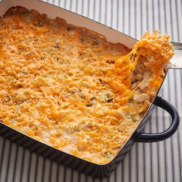

Turkey Casserole

This is our finished product
This dish is an American classic. Here I give you a simple recipe that can feed the whole family.
Ingredients
- 1 cup diced celery
- 5 tablespoons butter
- 1 onion, chopped
- 6 tablespoons all-purpose flour
- 1 (10.75 ounce) can cream of mushroom soup
- 1 (10.75 ounce) can milk
- 1 (6 ounce) can mushrooms
- 3 cups diced cooked turkey
- 1 (4 ounce) jar chopped pimento peppers
- ½ cup slivered almonds
- salt to taste
- 1 cup soft bread crumbs
- 1 cup shredded Cheddar cheese
Steps
- Preheat the oven to 375 degrees F (190 degrees C).
- Bring a large pot of lightly salted water to a boil;
cook celery at a boil until tender, 5 to 10 minutes; drain.
- Heat butter in a skillet over medium heat; cook and stir onion and bell pepper in the
melted butter until softened, 5 to 10 minutes. Whisk flour into the onion mixture until
the butter and flour form a paste. Add mushroom soup, milk, and mushrooms; cook,
stirring occasionally, until mixture is smooth, 5 to 10 minutes.
- Mix turkey, celery, pimento peppers, almonds, and salt into mushroom soup mixture;
cook and stir until heated through, about 5 minutes. Pour mixture into a 2-quart
casserole dish; top with bread crumbs and Cheddar cheese.
- Bake in the preheated oven until casserole is bubbling and cheese is melted, 30 to 40.
minutes.